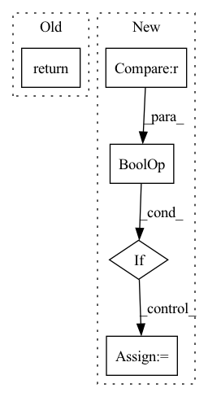

Pattern ID :2086

Before Change
pan_out0 = self.C3_n4(p_out0) // 1024->1024/32
outputs = (pan_out2, pan_out1, pan_out0)
return outputs
After Change
pan_out2 = self.C3_p3(f_out1) // 512->256/8
outputs["P3"] = pan_out2
if "P4" in self.out_features or "P5" in self.out_features:
p_out1 = self.bu_conv2(pan_out2) // 256->256/16
p_out1 = torch.cat([p_out1, fpn_out1], 1) // 256->512/16
pan_out1 = self.C3_n3(p_out1) // 512->512/16
outputs["P4"] = pan_out1
if "P5" in self.out_features:
p_out0 = self.bu_conv1(pan_out1) // 512->512/32
In pattern: SUPERPATTERN
Frequency: 3
Non-data size: 5
Instances
Fragment ID: 7518816
Project Name: developer0hye/yolox-backbone
Commit Name: d1d77b0859f96b37f20fb6831d3c1ce9802c1a30
Time: 2021-08-12
Author: developer.0hye@gmail.com
File Name: yolox_backbone/models/yolo_pafpn.py
M Class Name: YOLOPAFPN
N Class Name: YOLOPAFPN
M Method Name: forward(2)
N Method Name: forward(2)
M Parent Class: nn.Module
N Parent Class: nn.Module
M File Name: yolox_backbone/models/yolo_pafpn.py
N File Name: yolox_backbone/models/yolo_pafpn.py
M Start Line: 104
M End Line: 116
N Start Line: 95
N End Line: 124
'>
Before Change
self.drop_prob = drop_prob
def forward(self, x):
return drop_path(x, self.drop_prob, self.training)
class Tokenizer(nn.Module):
After Change
def forward(self, x):
batch, drop_prob, device, dtype = x.shape[0], self.drop_prob, x.device, x.dtype
if drop_prob <= 0. or not self.training:
return x
keep_prob = 1 - self.drop_prob
shape = (batch, *((1,) * (x.ndim - 1)))
keep_mask = torch.zeros(shape, device = device).float().uniform_(0, 1) < keep_prob
output = x.div(keep_prob) * keep_mask.float()
return output
class Tokenizer(nn.Module):
'>
Fragment ID: 7518807
Project Name: lucidrains/vit-pytorch
Commit Name: cb6d749821bbf3b0bd17c9e8e64eb343f40b3f69
Time: 2022-10-29
Author: lucidrains@gmail.com
File Name: vit_pytorch/cct.py
M Class Name: DropPath
N Class Name: DropPath
M Method Name: forward(2)
N Method Name: forward(2)
M Parent Class: nn.Module
N Parent Class: nn.Module
M File Name: vit_pytorch/cct.py
N File Name: vit_pytorch/cct.py
M Start Line: 153
M End Line: 153
N Start Line: 150
N End Line: 160
'>
Before Change
target_size = targets.size()[1]
t_self_mask = utils.create_trg_self_mask(target_size,
device=targets.device)
return self.decode(targets, enc_output, i_mask, t_self_mask, t_mask)
def initialize(self):
// weight init
After Change
self.initialize()
def forward(self, padded_input, input_lengths, padded_target):
if self.feat_extractor == "emb_cnn" or self.feat_extractor == "vgg_cnn":
padded_input = self.conv(padded_input)
// Reshaping features
sizes = padded_input.size() // B x H_1 (channel?) x H_2 x T
'>
Fragment ID: 7518814
Project Name: qute012/kosr
Commit Name: b7d24b0d835254fd425224eba3421a3b7224e55f
Time: 2021-01-12
Author: ejrwls012@gmail.com
File Name: model/transformer/transformer.py
M Class Name: Transformer
N Class Name: Transformer
M Method Name: forward(4)
N Method Name: forward(3)
M Parent Class: nn.Module
N Parent Class: nn.Module
M File Name: model/transformer/transformer.py
N File Name: model/transformer/transformer.py
M Start Line: 19
M End Line: 28
N Start Line: 18
N End Line: 34